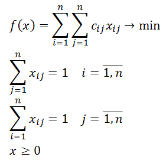

|  |
Имеется n исполнителей работ, которых нужно распределить по n видам работ. При этом известны затраты на выполнение исполнителем i вида работ j: Cij, i = 1,n, j = 1,n. Необходимо так распределить исполнителей по видам работ, чтобы суммарные затраты были минимальны. Задача о назначениях является частным случаем транспортной задачи и, соответственно, задачи линейного программирования, ее формулировку можно увидеть слева от данного текста. |
| Количество видов работ, n = | ||
|
|
||